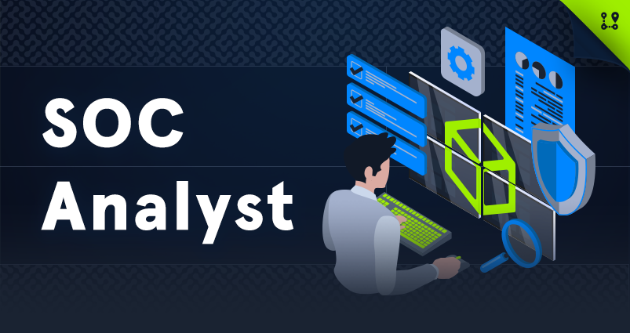

Certified Defensive Security Analyst
{kind=link}
CDSA Description
The SOC Analyst Job Role Path is for newcomers to information security who aspire to become professional SOC analysts. This path covers core security monitoring and security analysis concepts and provides a deep understanding of the specialized tools, attack tactics, and methodology used by adversaries. Armed with the necessary theoretical background and multiple practical exercises, students will go through all security analysis stages, from traffic analysis and SIEM monitoring to DFIR activities and reporting. Upon completing this job role path, you will have obtained the practical skills and mindset necessary to monitor enterprise-level infrastructure and detect intrusions at an intermediate level. The SOC Analyst Prerequisites skill path can be considered prerequisite knowledge to be successful while working through this job role path.
CDSA Modules
Introduction to Threat Hunting & Hunting With Elastic
Understanding Log Sources & Investigating with Splunk
Windows Attacks & Defense
Intro to Network Traffic Analysis
Intermediate Network Traffic Analysis
Working with IDS/IPS
Introduction to Malware Analysis
YARA & Sigma for SOC Analysts
Introduction to Digital Forensics
Detecting Windows Attacks with Splunk
Security Incident Reporting